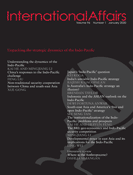

收录于合集

作品简介
【作者】 布伦丹·泰勒（Brendan Taylor），澳洲国立大学贝尔亚太事务学院副院长，战略研究教授。目前的研究重点是亚洲的热点问题，涉及亚太地区的大国战略关系、经济制裁和地区安全架构。
【编译】 杨帆（国政学人编译员，外交学院国际关系研究所）
【审读】 丁伟航
【排版】 王国伟
【来源】 Brendan Taylor(2020). Is Australia’s Indo-Pacific strategy an illusion? International Affairs , 96 (1),95-109.
期刊介绍

International Affairs ,《国际事务》是国际关系领域的一流学术期刊，也是多学科综合性学术期刊。本刊于1992年由伦敦皇家国际事务研究所查塔姆学院(Chatham House)创立，内容来源广泛，力图囊括业内专家、学术新秀对重点、热点问题的最新思考。期刊影响因子为3.748，在91种国际关系类刊物中位列第5名。
澳大利亚的印太战略是一种幻想吗?
Is Australia’s Indo-Pacific strategy an illusion?
Brendan Taylor
内容提要
澳大利亚是“印太”概念最早的倡导者之一。首先，文章认为，澳大利亚对“印太”的热情在很大程度上源于它同时呼应澳大利亚外交政策的两大主导传统，即依赖盟友（dependent ally）和中等强国（middle power），然而这两种传统截然相反。其次，文章以澳大利亚处理南海争端的方法为例指出其印太战略在措辞和执行上的显著分歧，这与这两个占主导地位的传统预期相反，而这种分歧是由于第三种“务实”（pragmatic）外交政策传统的影响越来越大造成的，且这种影响力越来越大的“实用主义”传统最终不利于印太总体框架的实施。最后，文章得出结论认为澳大利亚的“印太战略”在语言与现实之间的差距可能会对“印太”概念获得更广泛的国际吸引力和可持续性产生负面影响，尤其是在其东南亚邻国之中。
文章导读
引言
相关分析如此复杂的原因在于“印太”是一个有争议且使人困惑的概念。美、日把“印太”看作一种战略来对抗以中国为中心的地区秩序观；印度和一些东南亚国家将“印太”视为地理条件，反映了连接印度洋和太平洋的贸易和能源纽带的蓬勃发展；对中国来说这个概念本质上是没有意义的。总体而言，国家之间在“印太”概念的含义上没有达成共识，且这一分歧还存在于澳大利亚学术界和公众之间，有学者认为是中印两国势力范围的划分，有学者认为“印太”是一个新兴的地理实体，而澳大利亚的决策层则将其视为一种条件和战略。
一、 传统的对峙
澳大利亚两党共识可归因于“印太”对澳大利亚两大主要外交政策传统的呼应，即所谓的“依赖盟友”和“中等强国”传统。对于盟友的依赖，一方面澳大利亚可以在防范重大袭击上从英国以及随后的美国结盟中获得好处；另一方面英、美在亚洲的参与对维持这一地区的力量平衡至关重要，澳大利亚从其强大的保护者提供的军事和技术中获得了巨大的利益。此外，澳大利亚也为其结盟伙伴提供互惠利益，如在两次世界大战之间对其盟友做积极回应并支持其维护有利的地区和全球权力平衡。
在与“依赖盟友”相反的“中等强国”传统上，澳大利亚则认为中小国家可以在国际事务中发挥更独立的领导作用。首先，澳大利亚是一个中等强国是毋庸置疑的。其次，“中等强国”的传统在澳大利亚的外交政策行为中也很明显，澳大利亚一直积极参与在全球和区域的建立多边组织，如亚太经济合作组织(APEC)、东盟地区论坛和G20并通过这些组织与同样理念和大小的国家共同应对国际挑战。再次，澳大利亚致力于成为“良好的国际公民”，即建立“基于规则的秩序”。
有学者认为澳大利亚外交政策中“依赖盟友”和“中等强国”传统之间的分歧可能被夸大了；也有学者认为两者在根本上处于紧张状态，而这种紧张局势严重限制了澳大利亚行使发挥真正意义上的中等强国作用所需的政策自主权。
二、弥合分歧 ****
“印太”概念被描述为连接以往截然不同的东亚和南亚次区域的桥梁,且它对两种传统的呼应可以解释其在澳大利亚外交政策中的盛行原因。
作者认为，“印太”强调“依赖盟友”传统是因为它符合特朗普政府的既定美国战略。而对于澳大利亚还有其他几个原因。首先，“印太”使美国能够参与对澳大利亚至关重要的经济和战略区域；其次，“印太”被视为一种战略，而不是一种条件，其目的是在全球保持稳定的力量平衡，主要因为中国挑战美国主导的秩序的意愿和能力正在增强。
“印太”对规范的强调也符合澳大利亚外交政策的“中等强国”传统。首先，美国战略以“自由和开放”为重点，其中包含了尊重主权和独立、和平解决争端、公平和公开地进行贸易和投资、尊重国际规则和规范，这些在未来几十年将更适合澳大利亚。其次，随着澳大利亚体量的下降，它对避免一个修昔底德式亚洲的兴趣只会增加，堪培拉对现有多边团体的参与和公开支持再次符合“中等强国”的传统。
三、澳大利亚和中国南海：个案研究
作者认为澳大利亚的言辞与其实际政策之间的差距令人费解。澳大利亚在南海有明确的利害关系，包括南海航线在内的贯穿东南亚的沟通线是“印太”的核心，不仅因为它们关系到更广泛的全球和地区稳定，还因为澳大利亚依赖这些航线的开放；所以中国与菲律宾、越南的冲突以及在南海上的设施建设引起了澳大利亚对航道安全的担忧。
从“中等强国”的角度来看，“印太”正处于严重的紧张状态，更重要的是，中国在南海日益强硬的态势引发了一个根本性的问题:谁拥有制定和执行这些规则和规范的最终权力? 从“依赖盟友”的传统角度来看，南海不断加剧的紧张局势也很重要，尤其是在这个长期存在的冲突点日益成为中美战略竞争不断深化的焦点之际。
随着中美在南海的紧张局势加剧，华盛顿对澳大利亚军事援助的呼吁也有所增加，然而与“依赖盟友”传统的预期相反，这些要求没有得到积极的回应。这并不是说，澳大利亚政府一直试图避免与南海争端有任何牵连。相反澳大利亚一直在呼吁维护以规则为基础的秩序，且有些努力是具有代价和风险的。
四、 务实的传统？
作者认为尽管有上述言论和行动，但澳大利亚在南海的参与远远没有达到与“中等强国”传统相关的积极外交。主要有两个原因:一是担心冒犯中国，二是希望东南亚邻国不要越界。而澳大利亚一直避免更密切地遵守“依赖盟友”传统也有类似的理由。
作者赞同在一个中美战略竞争日益深化的时代，澳大利亚“务实”的外交政策传统开始发挥更大的影响。在实践中，澳大利亚的外交政策实用主义以一种临时的、情节式的方法表现出来。在这种方式下，决策是经过细致的成本收益分析后根据价值决定的，这种方法并不有利于执行“印太”这样宏大的战略框架;但澳大利亚政府的言论和行动之间的差距已经可以说明了。
可以肯定的是，澳大利亚政府持续在做表面上与其宣称的印太战略一致的政策决定，但其政策上并没有反映清晰的“印太”逻辑，包括其最近的几个政策决定。所以，澳大利亚截然不同的决定导致其遭受外交政策不连贯的指责，但从外交政策实用主义的角度来看，其政策制定是有道理的。总而言之，在澳大利亚，实用主义最终占了上风。
五、结论 ****
随着中美战略竞争的加剧，澳大利亚会进一步放大外交政策实用主义的影响，中国对待澳大利亚实用主义决定的务实态度也会持续下去。
澳大利亚为了保持这种务实的传统可能会继续推崇“印太”标签、支持“基于规则的秩序”并与东亚峰会和四方论坛等“印太”机构进行接触，然而澳大利亚对其所宣称的印太战略的执行不太可能像其倡导的那样一致或连贯，因此，其政策言论和行动之间的任何进一步扩大的差距都不会被忽视。
最终，澳大利亚无法坚持其对“印太”的热情，这可能对这一概念的普遍性和长期可持续性产生重要影响，对于澳大利亚的东南亚邻国来说尤其如此，它们中的许多国家现在正试探性地开始接受“印太”并努力解决其对这些国家的确切意义和适用性问题。
_ ** _ ** _ ** _
本文由国政学人独家编译推荐，文章观点不代表本平台观点，转载请联系授权。**__